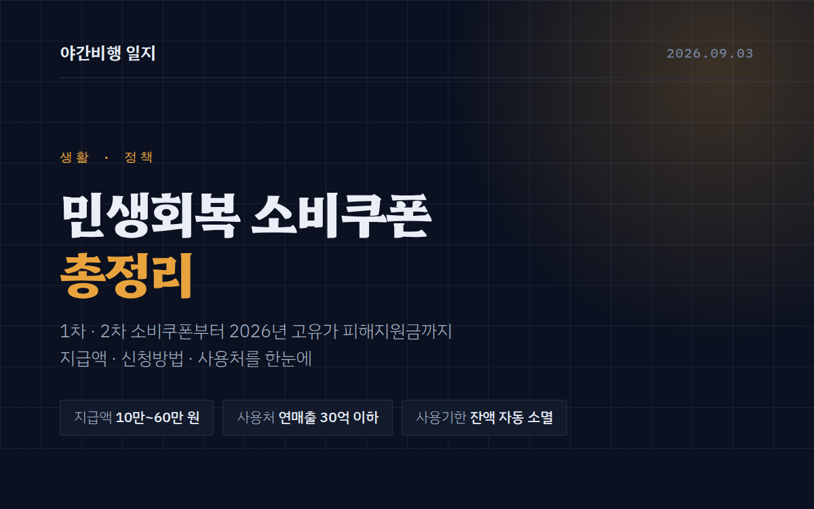

<title>민생회복 소비쿠폰 총정리 — 지급액·신청방법·사용처 한눈에 | 야간비행 일지</title>
<meta name="description" content="민생회복 소비쿠폰 1차·2차와 2026년 3차(고유가 피해지원금)를 한 번에 정리했습니다. 지급 대상과 계층·지역별 지급액, 신청 방법과 기간, 사용 가능·불가 업종, 사용 지역 제한, 잔액 소멸 규정까지 확인하세요.">
<meta name="viewport" content="width=device-width, initial-scale=1">
<meta name="robots" content="index, follow, max-image-preview:large">
<meta name="author" content="야간비행 일지">
<link rel="canonical" href="https://danielmoon82.github.io/moon/posts/consumer-coupon.html">

<meta property="og:type" content="article">
<meta property="og:locale" content="ko_KR">
<meta property="og:site_name" content="야간비행 일지">
<meta property="og:url" content="https://danielmoon82.github.io/moon/posts/consumer-coupon.html">
<meta property="og:title" content="민생회복 소비쿠폰 총정리 — 지급액·신청방법·사용처 한눈에">
<meta property="og:description" content="1차·2차 민생회복 소비쿠폰과 2026년 3차 고유가 피해지원금까지. 지급액 차등표, 신청 방법, 사용처와 사용 지역 제한, 잔액 소멸 규정을 한 번에 정리했습니다.">
<meta property="og:image" content="https://danielmoon82.github.io/moon/posts/images/consumer-coupon-cover.png">
<meta property="article:published_time" content="2026-09-03">
<meta property="article:section" content="생활·정책">

<meta name="twitter:card" content="summary_large_image">
<meta name="twitter:title" content="민생회복 소비쿠폰 총정리 — 지급액·신청방법·사용처 한눈에">
<meta name="twitter:description" content="1차·2차 민생회복 소비쿠폰과 2026년 3차 고유가 피해지원금까지 한 번에 정리했습니다.">
<meta name="twitter:image" content="https://danielmoon82.github.io/moon/posts/images/consumer-coupon-cover.png">

<link rel="preconnect" href="https://fonts.googleapis.com">
<link rel="preconnect" href="https://fonts.gstatic.com" crossorigin>
<link rel="stylesheet" href="https://fonts.googleapis.com/css2?family=Hahmlet:wght@400;600;800&family=IBM+Plex+Mono:wght@400;500&family=IBM+Plex+Sans+KR:wght@300;400;500;600&display=swap">

<script type="application/ld+json">
{
  "@context": "https://schema.org",
  "@graph": [
    {
      "@type": "Article",
      "@id": "https://danielmoon82.github.io/moon/posts/consumer-coupon.html#article",
      "headline": "민생회복 소비쿠폰 총정리 — 지급액·신청방법·사용처 한눈에",
      "description": "민생회복 소비쿠폰 1차·2차와 2026년 3차 고유가 피해지원금의 지급 대상, 계층·지역별 지급액, 신청 방법, 사용 가능·불가 업종, 사용 지역 제한과 잔액 소멸 규정을 정리했습니다.",
      "inLanguage": "ko-KR",
      "datePublished": "2026-09-03",
      "dateModified": "2026-09-03",
      "articleSection": "생활·정책",
      "keywords": "민생회복 소비쿠폰, 소비쿠폰, 고유가 피해지원금, 민생지원금, 소비쿠폰 사용처, 소비쿠폰 신청방법, 지역사랑상품권",
      "author": { "@type": "Person", "name": "야간비행 일지" },
      "publisher": { "@type": "Organization", "name": "야간비행 일지" },
      "mainEntityOfPage": { "@type": "WebPage", "@id": "https://danielmoon82.github.io/moon/posts/consumer-coupon.html" }
    },
    {
      "@type": "BreadcrumbList",
      "itemListElement": [
        { "@type": "ListItem", "position": 1, "name": "야간비행 일지", "item": "https://danielmoon82.github.io/moon/" },
        { "@type": "ListItem", "position": 2, "name": "생활·정책", "item": "https://danielmoon82.github.io/moon/#life" },
        { "@type": "ListItem", "position": 3, "name": "민생회복 소비쿠폰 총정리" }
      ]
    },
    {
      "@type": "FAQPage",
      "mainEntity": [
        {
          "@type": "Question",
          "name": "지금도 민생회복 소비쿠폰을 신청할 수 있나요?",
          "acceptedAnswer": { "@type": "Answer", "text": "아닙니다. 1차·2차 민생회복 소비쿠폰의 신청은 2025년에, 3차에 해당하는 고유가 피해지원금의 신청은 2026년 7월 3일에 이미 마감됐습니다. 사용 기한도 2026년 8월 31일로 종료됐습니다. 다음 지원금의 시행 여부는 추가경정예산 편성에 달려 있어, 행정안전부와 정책브리핑 공지를 확인하는 것이 가장 정확합니다." }
        },
        {
          "@type": "Question",
          "name": "기한 안에 다 못 쓴 금액은 돌려받을 수 있나요?",
          "acceptedAnswer": { "@type": "Answer", "text": "돌려받을 수 없습니다. 사용 기한이 지나면 잔액은 자동 소멸되어 국고로 환수되며, 환불이나 현금화, 다음 지원금으로의 이월은 모두 불가능합니다. 연장이나 개별 예외도 적용되지 않았습니다." }
        },
        {
          "@type": "Question",
          "name": "대형마트에서는 왜 쓸 수 없나요?",
          "acceptedAnswer": { "@type": "Answer", "text": "이 지원금의 목적이 소상공인 매출 회복에 있기 때문입니다. 사용처가 연 매출 30억 원 이하 사업장으로 제한되어 있어, 대형마트·기업형 슈퍼마켓·백화점·면세점처럼 매출 규모가 큰 곳은 처음부터 대상에서 빠졌습니다. 같은 이유로 온라인 쇼핑몰도 제외됐습니다." }
        },
        {
          "@type": "Question",
          "name": "주소지를 옮기면 사용 지역도 바뀌나요?",
          "acceptedAnswer": { "@type": "Answer", "text": "사용 지역은 주민등록상 주소지를 기준으로 정해집니다. 특별시·광역시 주민은 해당 시 전역에서, 도 지역 주민은 주소지 시·군 안에서만 쓸 수 있습니다. 전입신고 후 사용 지역이 변경되는지는 지급 수단과 지자체 운영 방식에 따라 다르므로, 이사 예정이라면 주소지 행정복지센터에 미리 확인하는 편이 안전합니다." }
        },
        {
          "@type": "Question",
          "name": "배달앱에서는 정말 쓸 수 없나요?",
          "acceptedAnswer": { "@type": "Answer", "text": "앱 안에서 미리 결제하는 방식은 사용할 수 없습니다. 다만 가게가 보유한 자체 단말기로 결제하는 '만나서 결제' 방식은 대면 결제로 인정되어 사용할 수 있었습니다. 기준은 결제가 실제로 그 가게의 단말기에서 이뤄지는지 여부입니다." }
        },
        {
          "@type": "Question",
          "name": "가족 몫을 한 사람이 모아서 신청할 수 있나요?",
          "acceptedAnswer": { "@type": "Answer", "text": "가능했습니다. 세대주가 세대원 몫을 함께 신청해 하나의 카드나 상품권으로 받을 수 있었고, 세대원이 각자 따로 신청할 수도 있었습니다. 다만 한 번 선택한 지급 수단은 변경이 어려웠기 때문에, 신청 전에 가족끼리 방식을 맞춰두는 것이 편했습니다." }
        }
      ]
    }
  ]
}
</script>
<style>
  :root{
    --paper:#E7EBF1;
    --surface:#F4F6FA;
    --surface-2:#DCE2EC;
    --ink:#0F1729;
    --ink-2:#3D4A63;
    --ink-3:#6B7891;
    --line:#C6CEDB;
    --line-soft:#D6DCE6;
    --accent:#B06A15;
    --accent-bright:#C2761A;
    --accent-soft:rgba(176,106,21,.11);

    --f-display:"Hahmlet",'Nanum Myeongjo',"Apple SD Gothic Neo",serif;
    --f-body:"IBM Plex Sans KR","Apple SD Gothic Neo","Malgun Gothic",sans-serif;
    --f-mono:"IBM Plex Mono","SFMono-Regular",Consolas,monospace;

    --pad:clamp(20px,5vw,64px);
  }
  @media (prefers-color-scheme:dark){
    :root:not([data-theme="light"]){
      --paper:#0B1120;
      --surface:#121A2C;
      --surface-2:#1A2439;
      --ink:#E9EEF7;
      --ink-2:#A9B5C9;
      --ink-3:#72809A;
      --line:#26314A;
      --line-soft:#1D2739;
      --accent:#E8A33D;
      --accent-bright:#F0B45C;
      --accent-soft:rgba(232,163,61,.13);
    }
  }
  :root[data-theme="dark"]{
    --paper:#0B1120;
    --surface:#121A2C;
    --surface-2:#1A2439;
    --ink:#E9EEF7;
    --ink-2:#A9B5C9;
    --ink-3:#72809A;
    --line:#26314A;
    --line-soft:#1D2739;
    --accent:#E8A33D;
    --accent-bright:#F0B45C;
    --accent-soft:rgba(232,163,61,.13);
  }

  *{box-sizing:border-box;}
  body{
    margin:0;
    background:var(--paper);
    color:var(--ink);
    font-family:var(--f-body);
    font-weight:300;
    font-size:16px;
    line-height:1.75;
    -webkit-font-smoothing:antialiased;
  }
  a{color:inherit;}
  :focus-visible{outline:2px solid var(--accent-bright);outline-offset:3px;border-radius:2px;}
  img{max-width:100%;height:auto;}

  .wrap{max-width:720px;margin:0 auto;padding-inline:var(--pad);}

  .nav{
    position:sticky;top:0;z-index:20;
    background:color-mix(in srgb, var(--paper) 88%, transparent);
    backdrop-filter:saturate(180%) blur(12px);
    border-bottom:1px solid var(--line);
  }
  .nav-in{display:flex;align-items:center;justify-content:space-between;gap:20px;height:58px;}
  .brand{
    font-family:var(--f-display);
    font-weight:600;font-size:1rem;letter-spacing:-.02em;
    text-decoration:none;color:var(--ink);
  }
  .back{
    font-family:var(--f-mono);
    font-size:.72rem;letter-spacing:.06em;
    color:var(--ink-3);text-decoration:none;
  }
  .back:hover{color:var(--accent);}

  .article{padding-block:clamp(40px,7vw,72px) clamp(56px,9vw,96px);}
  .eyebrow{
    font-family:var(--f-mono);
    font-size:.68rem;letter-spacing:.16em;text-transform:uppercase;
    color:var(--accent);margin:0 0 14px;
  }
  h1{
    font-family:var(--f-display);
    font-weight:800;font-size:clamp(1.7rem,4.6vw,2.5rem);
    line-height:1.28;letter-spacing:-.03em;
    margin:0 0 16px;
  }
  .lede{margin:0 0 10px;font-size:1rem;color:var(--ink-2);}
  .byline{
    font-family:var(--f-mono);font-size:.72rem;color:var(--ink-3);
    padding-bottom:26px;border-bottom:1px solid var(--line);margin-bottom:34px;
  }

  .hero{
    width:100%;border-radius:4px;border:1px solid var(--line-soft);
    margin-bottom:38px;display:block;
  }

  h2{
    font-family:var(--f-display);
    font-weight:600;font-size:1.3rem;letter-spacing:-.02em;
    margin:46px 0 14px;
  }
  p{margin:0 0 18px;color:var(--ink-2);}
  .article strong{color:var(--ink);font-weight:600;}

  .spec{
    list-style:none;margin:0 0 22px;padding:20px clamp(16px,3vw,24px);
    border:1px solid var(--line);border-radius:3px;background:var(--surface);
  }
  .spec li{
    display:flex;gap:14px;padding:7px 0;
    border-bottom:1px solid var(--line-soft);
    font-size:.92rem;color:var(--ink-2);
  }
  .spec li:last-child{border-bottom:0;}
  .spec b{
    flex:0 0 88px;font-weight:500;color:var(--ink-3);
    font-family:var(--f-mono);font-size:.74rem;letter-spacing:.04em;
    padding-top:3px;text-transform:uppercase;
  }

  ul.bullets{margin:0 0 20px;padding-left:20px;color:var(--ink-2);}
  ul.bullets li{margin-bottom:8px;}

  figure{margin:32px 0;}
  figure img{border-radius:4px;border:1px solid var(--line-soft);display:block;}
  figcaption{
    margin-top:10px;font-family:var(--f-mono);font-size:.7rem;
    color:var(--ink-3);text-align:center;
  }

  .callout{
    margin:30px 0;padding:18px clamp(16px,3vw,22px);
    border-left:3px solid var(--accent);
    background:var(--accent-soft);border-radius:0 3px 3px 0;
  }
  .callout p{margin:0;font-size:.9rem;color:var(--ink-2);}

  .foot{
    border-top:1px solid var(--line);background:var(--surface);
    padding-block:32px 40px;margin-top:20px;
  }
  .foot p{margin:0;font-size:.8rem;color:var(--ink-3);}
  .foot .sig{
    font-family:var(--f-display);font-weight:600;font-size:1rem;
    color:var(--ink);letter-spacing:-.02em;margin-bottom:4px;
  }

  /* ---------- 소비쿠폰 포스트 전용 ---------- */
  h3{
    font-family:var(--f-display);
    font-weight:600;font-size:1.05rem;letter-spacing:-.02em;
    margin:30px 0 10px;color:var(--ink);
  }

  .toc{
    margin:0 0 38px;padding:20px clamp(16px,3vw,24px);
    border:1px solid var(--line);border-radius:3px;background:var(--surface);
  }
  .toc h2{
    margin:0 0 12px;font-size:.72rem;letter-spacing:.16em;text-transform:uppercase;
    font-family:var(--f-mono);font-weight:500;color:var(--ink-3);
  }
  .toc ol{margin:0;padding-left:20px;color:var(--ink-2);font-size:.9rem;}
  .toc li{margin-bottom:6px;}
  .toc a{color:var(--ink-2);text-decoration:none;border-bottom:1px solid var(--line);}
  .toc a:hover{color:var(--accent);border-bottom-color:var(--accent);}

  .table-wrap{overflow-x:auto;margin:0 0 22px;-webkit-overflow-scrolling:touch;}
  table{
    width:100%;border-collapse:collapse;min-width:460px;
    font-size:.88rem;background:var(--surface);
    border:1px solid var(--line);border-radius:3px;
  }
  caption{
    caption-side:top;text-align:left;padding-bottom:10px;
    font-family:var(--f-mono);font-size:.7rem;letter-spacing:.06em;
    color:var(--ink-3);
  }
  th,td{
    padding:10px 12px;text-align:left;
    border-bottom:1px solid var(--line-soft);color:var(--ink-2);
  }
  thead th{
    background:var(--surface-2);color:var(--ink);
    font-family:var(--f-mono);font-size:.72rem;letter-spacing:.06em;
    font-weight:500;text-transform:uppercase;
    border-bottom:1px solid var(--line);
  }
  tbody tr:last-child td{border-bottom:0;}
  td.num{font-family:var(--f-mono);white-space:nowrap;}

  .cols{
    display:grid;gap:16px;margin:0 0 22px;
    grid-template-columns:repeat(auto-fit,minmax(240px,1fr));
  }
  .col-card{
    padding:18px clamp(14px,2.4vw,20px);
    border:1px solid var(--line);border-radius:3px;background:var(--surface);
  }
  .col-card h3{margin:0 0 10px;font-size:.98rem;}
  .col-card ul{margin:0;padding-left:18px;color:var(--ink-2);font-size:.87rem;}
  .col-card li{margin-bottom:6px;}
  .col-card.no{border-left:3px solid var(--ink-3);}
  .col-card.yes{border-left:3px solid var(--accent);}

  .faq{margin:0 0 22px;}
  .faq details{
    border:1px solid var(--line);border-radius:3px;background:var(--surface);
    margin-bottom:10px;
  }
  .faq summary{
    cursor:pointer;padding:14px clamp(14px,2.4vw,18px);
    font-weight:500;color:var(--ink);font-size:.93rem;
    list-style:none;position:relative;padding-right:44px;
  }
  .faq summary::-webkit-details-marker{display:none;}
  .faq summary::after{
    content:"+";position:absolute;right:18px;top:50%;transform:translateY(-50%);
    font-family:var(--f-mono);color:var(--accent);font-size:1rem;
  }
  .faq details[open] summary::after{content:"−";}
  .faq details p{
    margin:0;padding:0 clamp(14px,2.4vw,18px) 16px;
    font-size:.89rem;color:var(--ink-2);
  }

  .sources{margin:0;padding-left:20px;color:var(--ink-3);font-size:.82rem;}
  .sources li{margin-bottom:6px;}
  .sources a{color:var(--ink-3);}
  .sources a:hover{color:var(--accent);}

  .updated{
    font-family:var(--f-mono);font-size:.72rem;color:var(--ink-3);
    margin:34px 0 0;padding-top:18px;border-top:1px solid var(--line);
  }
</style>

<nav class="nav">
  <div class="wrap nav-in">
    <a class="brand" href="../index.html">야간비행 일지</a>
    <a class="back" href="../index.html#life">← 목록으로</a>
  </div>
</nav>

<main class="wrap article">
  <p class="eyebrow">생활·정책</p>
  <h1>민생회복 소비쿠폰 총정리 — 지급액·신청방법·사용처 한눈에</h1>
  <p class="lede">2025년 1차·2차 민생회복 소비쿠폰부터 2026년 3차에 해당하는 고유가 피해지원금까지, 누가 얼마를 받았고 어디에 어떻게 썼는지를 한 번에 정리했습니다.</p>
  <p class="byline">2026.09.03 · 생활·정책 · 읽는 데 약 8분</p>

  

  <p>지난 2년 사이 “소비쿠폰”이라는 단어를 안 들어본 사람은 거의 없을 겁니다. 2025년 여름에 처음 나온 <strong>민생회복 소비쿠폰</strong>은 전 국민에게 지급됐고, 그해 가을 2차가 이어졌으며, 2026년에는 이름을 바꾼 3차 격 지원금인 <strong>고유가 피해지원금</strong>이 지급됐습니다. 세 번 모두 신청 창구와 사용 규칙이 조금씩 달랐던 탓에, “나는 얼마를 받는 거지”, “이 가게에서 써도 되나”를 매번 다시 찾아봐야 했습니다.</p>

  <p>이 글은 그 세 차례를 하나의 표로 묶고, 지급액·신청 방법·사용처·사용 기한을 정리한 문서입니다. 제도가 어떤 원리로 굴러갔는지를 알아두면 다음 지원금이 나왔을 때 공지 한 장만 보고도 바로 판단할 수 있습니다. 아래 숫자들은 모두 <strong>행정안전부와 대한민국 정책브리핑이 공개한 기준</strong>을 옮긴 것이며, 글 맨 아래에 출처를 달아두었습니다.</p>

  <nav class="toc" aria-label="목차">
    <h2>목차</h2>
    <ol>
      <li><a href="#what">민생회복 소비쿠폰이란</a></li>
      <li><a href="#compare">1차·2차·3차 한눈에 비교</a></li>
      <li><a href="#round1">1차 — 전 국민 15만 원부터</a></li>
      <li><a href="#round2">2차 — 소득 하위 90% 10만 원</a></li>
      <li><a href="#round3">3차 — 2026년 고유가 피해지원금</a></li>
      <li><a href="#how">신청 방법과 지급 수단</a></li>
      <li><a href="#where">사용처 — 되는 곳과 안 되는 곳</a></li>
      <li><a href="#region">사용 지역 제한</a></li>
      <li><a href="#deadline">사용 기한과 잔액 소멸</a></li>
      <li><a href="#faq">자주 묻는 질문</a></li>
    </ol>
  </nav>

  <h2 id="what">민생회복 소비쿠폰이란</h2>
  <p>민생회복 소비쿠폰은 정부가 추가경정예산을 편성해 국민에게 <strong>현금이 아닌 소비 전용 지급 수단</strong>으로 나눠준 지원금입니다. 핵심은 “현금이 아니다”라는 점에 있습니다. 계좌로 넣어주면 상당 부분이 저축이나 대출 상환으로 흘러가 소비 진작 효과가 흐려지기 때문에, 정부는 <strong>사용 기한을 못 박고, 쓸 수 있는 가게를 소상공인 매장으로 한정</strong>하는 방식을 택했습니다.</p>

  <p>그래서 이 제도에는 늘 세 가지 제약이 따라붙습니다. 첫째, 정해진 날짜까지 쓰지 않으면 남은 금액이 사라집니다. 둘째, 주민등록상 주소지 안에서만 쓸 수 있습니다. 셋째, 대형마트나 백화점처럼 이미 매출이 큰 곳에서는 쓸 수 없습니다. 지원금을 “받는 것”보다 “기한 안에 제대로 쓰는 것”이 더 어렵다는 말이 나온 이유입니다.</p>

  <h2 id="compare">1차·2차·3차 한눈에 비교</h2>
  <p>세 차례 지급을 표로 묶으면 차이가 분명해집니다. 1차는 전 국민, 2차는 소득 하위 90%, 3차는 소득 하위 70%로 대상 범위가 점점 좁아졌고, 대신 지역과 소득 계층에 따른 차등 폭은 커졌습니다.</p>

  <div class="table-wrap">
    <table>
      <caption>민생회복 소비쿠폰 3차례 지급 비교</caption>
      <thead>
        <tr><th scope="col">구분</th><th scope="col">1차 (2025)</th><th scope="col">2차 (2025)</th><th scope="col">3차 (2026)</th></tr>
      </thead>
      <tbody>
        <tr><th scope="row">공식 명칭</th><td>민생회복 소비쿠폰</td><td>민생회복 소비쿠폰 2차</td><td>고유가 피해지원금</td></tr>
        <tr><th scope="row">지급 대상</th><td>전 국민</td><td>소득 하위 90%</td><td>소득 하위 70% (약 3,577만 명)</td></tr>
        <tr><th scope="row">1인당 금액</th><td class="num">15만~45만 원</td><td class="num">10만 원 정액</td><td class="num">10만~60만 원</td></tr>
        <tr><th scope="row">신청 기간</th><td class="num">2025.7.21~9.12</td><td class="num">2025.9.22~10.31</td><td class="num">2026.4.27~7.3</td></tr>
        <tr><th scope="row">사용 기한</th><td class="num">2025.11.30</td><td class="num">2025.11.30</td><td class="num">2026.8.31</td></tr>
      </tbody>
    </table>
  </div>

  <h2 id="round1">1차 — 전 국민 15만 원부터</h2>
  <p>2025년 7월 21일 오전 9시에 시작된 1차는 <strong>소득에 관계없이 전 국민이 대상</strong>이었습니다. 기본 금액은 1인당 15만 원이었고, 여기에 두 가지 가산이 붙었습니다. 서울·경기·인천을 제외한 <strong>비수도권 주민에게는 3만 원</strong>이, 농어촌 인구감소지역으로 지정된 <strong>84개 시·군 주민에게는 5만 원</strong>이 더해졌습니다.</p>

  <p>소득 계층별 가산은 이보다 훨씬 컸습니다. 차상위계층과 한부모가족은 1인당 30만 원, 기초생활수급자는 1인당 40만 원을 받았고, 여기에 지역 가산까지 더하면 최대 45만 원까지 올라갔습니다. 4인 가구 기초생활수급 가구가 비수도권에 산다면 가구 단위로는 180만 원에 달하는 금액이었던 셈입니다.</p>

  <ul class="spec">
    <li><b>대상</b><span>전 국민 (해외 체류자는 건강보험 가입 및 귀국 기록 조건)</span></li>
    <li><b>기본</b><span>1인당 15만 원</span></li>
    <li><b>지역가산</b><span>비수도권 +3만 원 / 농어촌 인구감소지역 84개 시·군 +5만 원</span></li>
    <li><b>계층가산</b><span>차상위·한부모 30만 원 / 기초생활수급자 40만 원</span></li>
    <li><b>신청</b><span>2025년 7월 21일 09:00 ~ 9월 12일 18:00</span></li>
  </ul>

  <h2 id="round2">2차 — 소득 하위 90% 10만 원</h2>
  <p>2차는 2025년 9월 22일부터 10월 31일까지 신청을 받았습니다. 1차와 가장 크게 달라진 점은 <strong>대상이 전 국민에서 소득 하위 90%로 좁혀졌다는 것</strong>입니다. 기준은 건강보험료 납부액이었고, 상위 10%는 제외됐습니다. 금액은 지역이나 계층 구분 없이 <strong>1인당 10만 원 정액</strong>이었습니다.</p>

  <p>중요한 건 사용 기한이 1차와 하나로 묶였다는 점입니다. 1차로 받은 금액과 2차로 받은 금액 모두 <strong>2025년 11월 30일 자정까지</strong> 써야 했고, 2차를 늦게 신청한 사람일수록 쓸 수 있는 기간이 짧아지는 구조였습니다. 실제로 마감 직전에 “쓸 곳을 못 찾겠다”는 문의가 몰렸던 것도 이 때문입니다.</p>

  <h2 id="round3">3차 — 2026년 고유가 피해지원금</h2>
  <p>2026년 4월 10일, 26조 2,000억 원 규모의 추가경정예산안이 국회 본회의를 통과하면서 세 번째 지원금이 확정됐습니다. 이번에는 명칭이 <strong>고유가 피해지원금</strong>으로 바뀌었습니다. 국제 유가 상승에 따른 생활비 부담을 덜어준다는 명분을 앞세운 이름이지만, 지급 방식과 사용 규칙은 앞선 소비쿠폰을 거의 그대로 물려받았기 때문에 흔히 “3차 소비쿠폰”으로 불렸습니다.</p>

  <p>대상은 소득 상위 30%를 제외한 <strong>소득 하위 70%, 약 3,577만 명</strong>이었습니다. 여기에 기초생활수급자 285만 명, 차상위·한부모 가구 36만 명이 포함됩니다. 눈에 띄는 변화는 지역 차등이 네 단계로 세분화됐다는 점입니다. 1차에서 “비수도권”과 “인구감소지역” 둘로 나뉘던 구분이, 3차에서는 인구감소지역을 다시 <strong>우대지역과 특별지역으로 쪼개</strong> 지방일수록 더 많이 받도록 설계됐습니다.</p>

  <div class="table-wrap">
    <table>
      <caption>고유가 피해지원금 1인당 지급액 (2026년)</caption>
      <thead>
        <tr><th scope="col">거주 지역</th><th scope="col">일반 (하위 70%)</th><th scope="col">차상위·한부모</th><th scope="col">기초생활수급자</th></tr>
      </thead>
      <tbody>
        <tr><th scope="row">수도권</th><td class="num">10만 원</td><td class="num">45만 원</td><td class="num">55만 원</td></tr>
        <tr><th scope="row">비수도권</th><td class="num">15만 원</td><td class="num">50만 원</td><td class="num">60만 원</td></tr>
        <tr><th scope="row">인구감소 우대지역</th><td class="num">20만 원</td><td class="num">50만 원</td><td class="num">60만 원</td></tr>
        <tr><th scope="row">인구감소 특별지역</th><td class="num">25만 원</td><td class="num">50만 원</td><td class="num">60만 원</td></tr>
      </tbody>
    </table>
  </div>

  <p>신청은 두 차례로 나뉘어 진행됐습니다. 기초생활수급자와 차상위계층은 <strong>2026년 4월 27일부터 5월 8일까지</strong> 먼저 신청받았고, 일반 국민을 포함한 전체 대상은 <strong>5월 18일부터 7월 3일까지</strong>가 신청 기간이었습니다. 취약계층에게 먼저 지급해 체감 시점을 앞당기려는 설계였습니다.</p>

  <p>집행 규모도 컸습니다. 5월 26일 기준으로 신청자가 2,987만 명, 누적 지급액이 5조 3,000억 원을 넘어섰습니다. 신용·체크카드로 지급된 3조 5,492억 원 가운데 8월 18일 기준 97.3%가 이미 사용된 상태였는데, 이는 사용 기한이 있는 지급 수단이 실제로 소비로 이어졌다는 뜻이기도 합니다.</p>

  <div class="callout">
    <p><strong>이미 종료된 지원금입니다.</strong> 고유가 피해지원금의 사용 기한은 2026년 8월 31일 24시로 종료됐고, 미사용 잔액은 자동 소멸돼 국고로 환수됐습니다. 연장이나 예외는 적용되지 않았습니다. 이 글은 앞으로 비슷한 지원금이 다시 나올 때 기준점으로 삼을 수 있도록 남겨두는 기록입니다.</p>
  </div>

  <h2 id="how">신청 방법과 지급 수단</h2>
  <p>세 차례 모두 지급 수단은 <strong>지역사랑상품권·신용체크카드·선불카드</strong> 세 가지 중에서 골랐습니다. 어떤 걸 고르느냐에 따라 신청 창구와 사용 편의가 달라집니다.</p>

  <ul class="bullets">
    <li><strong>신용·체크카드</strong> — 평소 쓰던 카드에 금액이 얹히는 방식입니다. 결제하면 지원금이 먼저 차감되기 때문에 따로 챙길 게 없어 가장 편합니다. KB국민·NH농협·롯데·삼성·신한·우리·하나·현대·BC 등 주요 카드사 홈페이지와 앱, 콜센터·ARS에서 신청할 수 있고, 카카오뱅크·케이뱅크·토스·카카오페이·네이버페이 앱에서도 신청이 가능했습니다.</li>
    <li><strong>선불카드</strong> — 카드가 없거나 온라인 신청이 어려운 분들을 위한 방식입니다. 주소지 행정복지센터(주민센터)에서 평일 09:00~18:00에 방문 신청합니다. 실물 카드를 받아 쓰기 때문에 잔액 확인을 따로 해야 합니다.</li>
    <li><strong>지역사랑상품권</strong> — 지자체가 발행하는 지역화폐로 받는 방식입니다. 서울이라면 서울페이플러스(서울Pay+) 앱처럼, 지자체별 전용 앱에서 신청합니다. 지역 가맹점 범위가 카드와 조금 다를 수 있어 자주 가는 가게가 가맹점인지 미리 확인하는 게 좋습니다.</li>
  </ul>

  <p>신청 첫 주에는 <strong>출생연도 끝자리에 따른 요일제</strong>가 적용됐습니다. 접속이 한꺼번에 몰리는 걸 막기 위한 장치로, 둘째 주부터는 출생연도와 상관없이 아무 날에나 신청할 수 있었습니다. 온라인 신청은 24시간 열려 있었고, 은행 창구와 주민센터 방문 신청은 평일 업무 시간에만 가능했습니다.</p>

  <h2 id="where">사용처 — 되는 곳과 안 되는 곳</h2>
  <p>가장 많이 헷갈리는 부분입니다. 기준은 하나로 요약됩니다. <strong>연 매출 30억 원 이하 소상공인 매장</strong>이면 되고, 그보다 크거나 정부가 지정한 제한 업종이면 안 됩니다. 같은 프랜차이즈 간판을 달고 있어도 가맹점이면 되고 직영점이면 안 되는 경우가 있는 건 이 매출 기준 때문입니다.</p>

  <div class="cols">
    <div class="col-card yes">
      <h3>쓸 수 있는 곳</h3>
      <ul>
        <li>전통시장, 동네 마트</li>
        <li>음식점, 개인 카페, 빵집</li>
        <li>미용실, 안경원, 약국</li>
        <li>학원, 병·의원</li>
        <li>편의점, 동네 주유소</li>
        <li>프랜차이즈 가맹점 (직영점 제외)</li>
      </ul>
    </div>
    <div class="col-card no">
      <h3>쓸 수 없는 곳</h3>
      <ul>
        <li>대형마트, 기업형 슈퍼마켓(SSM)</li>
        <li>백화점, 면세점, 아울렛</li>
        <li>온라인 쇼핑몰</li>
        <li>배달앱 (만나서 결제는 예외)</li>
        <li>유흥·사행업종</li>
        <li>상품권 등 환금성 업종</li>
      </ul>
    </div>
  </div>

  <p>배달앱은 특히 오해가 많았습니다. 앱 안에서 미리 결제하는 방식은 안 되지만, 가게가 가진 단말기로 <strong>“만나서 결제”</strong>를 하면 대면 결제로 잡혀 사용할 수 있었습니다. 온라인 결제를 막은 취지가 “동네 가게에서 쓰게 하자”는 데 있었기 때문에, 결제가 실제로 그 가게 단말기에서 일어나는지가 기준이 된 셈입니다.</p>

  <h2 id="region">사용 지역 제한</h2>
  <p>지원금은 <strong>주민등록상 주소지</strong> 안에서만 쓸 수 있었습니다. 규칙은 두 갈래입니다.</p>
  <ul class="bullets">
    <li><strong>특별시·광역시 주민</strong> — 해당 시 전역에서 사용 가능합니다. 서울에 주소가 있다면 서울 안 어디서든 됩니다.</li>
    <li><strong>도 지역 주민</strong> — 주소지에 해당하는 <strong>시·군 안에서만</strong> 사용 가능합니다. 같은 도 안이어도 옆 시로 넘어가면 결제가 막힙니다.</li>
  </ul>
  <p>이 차이 때문에 도 지역에 사는 분들의 불편이 컸습니다. 생활권이 시 경계를 넘나드는 경우가 흔한데 결제는 행정구역을 따르기 때문입니다. 이사를 한 경우에도 기준은 신청 시점의 주소지였으므로, 전입신고 후 사용 지역이 어떻게 바뀌는지 지자체에 확인이 필요했습니다.</p>

  <h2 id="deadline">사용 기한과 잔액 소멸</h2>
  <p>이 제도에서 가장 냉정한 규칙입니다. <strong>기한이 지나면 남은 금액은 자동으로 소멸되고 국고로 환수됩니다.</strong> 환불도, 이월도, 연장도 없습니다. 1차와 2차 소비쿠폰은 2025년 11월 30일 자정, 3차 고유가 피해지원금은 2026년 8월 31일 24시가 마감이었습니다.</p>

  <p>매번 마감 직전에 잔액이 몰리는 패턴이 반복됐습니다. 그래서 지원금이 나오면 <strong>받은 직후에 “어디에 쓸지”를 먼저 정해두는 편</strong>이 낫습니다. 평소 현금이나 다른 카드로 나가던 고정 지출 — 동네 병원비, 약값, 아이 학원비, 미용실, 안경 — 을 지원금으로 돌리면 억지 소비를 만들지 않고도 기한 안에 다 쓸 수 있습니다.</p>

  <p>잔액 확인 방법도 지급 수단마다 다릅니다. 신용·체크카드는 카드사 앱이나 홈페이지에서, 선불카드는 카드 뒷면에 안내된 조회 사이트나 전용 앱에서, 지역사랑상품권은 지자체 전용 앱에서 확인합니다. 결제할 때 지원금이 먼저 빠져나가는지, 아니면 카드 대금과 섞이는지도 카드사마다 안내가 다르니 첫 결제 후 한 번은 내역을 확인해보는 게 좋습니다.</p>

  <p>지급 대상이나 금액이 실제와 다르다고 판단되면 <strong>이의신청</strong>을 할 수 있었습니다. 건강보험료 기준이 최근 소득 변동을 반영하지 못한 경우가 대표적입니다. 창구는 국민신문고(epeople.go.kr)와 주소지 행정복지센터였고, 신청 기간 안에 접수해야 처리됐습니다.</p>

  <h2 id="faq">자주 묻는 질문</h2>

  <div class="faq">
    <details>
      <summary>지금도 민생회복 소비쿠폰을 신청할 수 있나요?</summary>
      <p>아닙니다. 1차·2차 민생회복 소비쿠폰의 신청은 2025년에, 3차에 해당하는 고유가 피해지원금의 신청은 2026년 7월 3일에 이미 마감됐습니다. 사용 기한도 2026년 8월 31일로 종료됐습니다. 다음 지원금의 시행 여부는 추가경정예산 편성에 달려 있어, 행정안전부와 정책브리핑 공지를 확인하는 것이 가장 정확합니다.</p>
    </details>
    <details>
      <summary>기한 안에 다 못 쓴 금액은 돌려받을 수 있나요?</summary>
      <p>돌려받을 수 없습니다. 사용 기한이 지나면 잔액은 자동 소멸되어 국고로 환수되며, 환불이나 현금화, 다음 지원금으로의 이월은 모두 불가능합니다. 연장이나 개별 예외도 적용되지 않았습니다.</p>
    </details>
    <details>
      <summary>대형마트에서는 왜 쓸 수 없나요?</summary>
      <p>이 지원금의 목적이 소상공인 매출 회복에 있기 때문입니다. 사용처가 연 매출 30억 원 이하 사업장으로 제한되어 있어, 대형마트·기업형 슈퍼마켓·백화점·면세점처럼 매출 규모가 큰 곳은 처음부터 대상에서 빠졌습니다. 같은 이유로 온라인 쇼핑몰도 제외됐습니다.</p>
    </details>
    <details>
      <summary>주소지를 옮기면 사용 지역도 바뀌나요?</summary>
      <p>사용 지역은 주민등록상 주소지를 기준으로 정해집니다. 특별시·광역시 주민은 해당 시 전역에서, 도 지역 주민은 주소지 시·군 안에서만 쓸 수 있습니다. 전입신고 후 사용 지역이 변경되는지는 지급 수단과 지자체 운영 방식에 따라 다르므로, 이사 예정이라면 주소지 행정복지센터에 미리 확인하는 편이 안전합니다.</p>
    </details>
    <details>
      <summary>배달앱에서는 정말 쓸 수 없나요?</summary>
      <p>앱 안에서 미리 결제하는 방식은 사용할 수 없습니다. 다만 가게가 보유한 자체 단말기로 결제하는 &lsquo;만나서 결제&rsquo; 방식은 대면 결제로 인정되어 사용할 수 있었습니다. 기준은 결제가 실제로 그 가게의 단말기에서 이뤄지는지 여부입니다.</p>
    </details>
    <details>
      <summary>가족 몫을 한 사람이 모아서 신청할 수 있나요?</summary>
      <p>가능했습니다. 세대주가 세대원 몫을 함께 신청해 하나의 카드나 상품권으로 받을 수 있었고, 세대원이 각자 따로 신청할 수도 있었습니다. 다만 한 번 선택한 지급 수단은 변경이 어려웠기 때문에, 신청 전에 가족끼리 방식을 맞춰두는 것이 편했습니다.</p>
    </details>
  </div>

  <h2 id="wrap">정리하며</h2>
  <p>세 차례를 관통하는 규칙은 결국 네 가지로 압축됩니다. <strong>주소지 안에서, 연 매출 30억 원 이하 가게에서, 정해진 기한 안에, 남기지 말고 쓴다.</strong> 명칭이 민생회복 소비쿠폰에서 고유가 피해지원금으로 바뀌었어도 이 골격은 그대로였습니다. 다음에 비슷한 지원금이 나온다면 확인할 것도 같습니다. 내 소득 구간과 거주 지역이 어느 칸에 들어가는지, 신청 창구가 어디인지, 그리고 마감이 언제인지.</p>

  <p>지원금은 받는 순간보다 쓰는 동안 체감이 큽니다. 받자마자 고정 지출 몇 가지를 지원금으로 돌려놓으면, 마감 직전에 쓸 곳을 찾아 헤매는 일도, 잔액을 그냥 날리는 일도 없습니다. 결국 가장 중요한 건 금액이 아니라 기한이었습니다.</p>

  <h2 id="sources">출처</h2>
  <ul class="sources">
    <li><a href="https://www.mois.go.kr/frt/sub/a06/b07/livelihoodCoupon/screen.do" target="_blank" rel="noopener">행정안전부 — 민생회복 소비쿠폰 안내</a></li>
    <li><a href="https://www.mois.go.kr/frt/sub/a06/b07/highOilPriceSupport/screen.do" target="_blank" rel="noopener">행정안전부 — 고유가 피해지원금 안내</a></li>
    <li><a href="https://www.korea.kr/news/policyNewsView.do?newsId=148945532" target="_blank" rel="noopener">대한민국 정책브리핑 — 소비쿠폰 15만~45만 원 지급</a></li>
    <li><a href="https://www.korea.kr/news/policyNewsView.do?newsId=148964141" target="_blank" rel="noopener">대한민국 정책브리핑 — 고유가 피해지원금 2차 지급 안내</a></li>
    <li><a href="https://www.korea.kr/news/policyFocusView.do?newsId=148970579" target="_blank" rel="noopener">대한민국 정책브리핑 — 8월 31일까지 사용 안내</a></li>
  </ul>

  <p class="updated">최종 확인 2026.09.03 · 지원금 제도는 공고에 따라 달라질 수 있으며, 신청 자격과 금액은 행정안전부 및 주소지 지자체 공지가 최종 기준입니다.</p>
</main>

<footer class="foot">
  <div class="wrap">
    <p class="sig">야간비행 일지</p>
    <p>정책 정보는 확인 시점 기준이며, 신청 자격·금액·기한은 관계 기관 공지를 따릅니다.</p>
  </div>
</footer>
